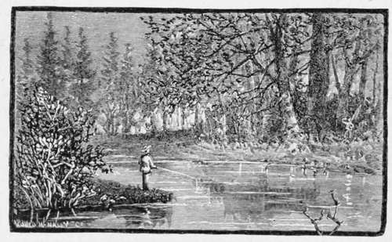

Fishing Tackle For Pikes
Description
This section is from the book "American Game Fishes", by W. A. Perry. Also available from Amazon: American Game Fishes: Their Habits, Habitat, and Peculiarities; How, When, and Where to Angle for Them.
Fishing Tackle For Pikes
A lance-wood or bethabara-wood rod, of about nine feet long, a "Milam," "Chubb's," "Henshall," "Van Antwerp," "Abbey & Imbrie, Steel-pivot Multiplier," or an "Automatic reel"-a strong but not heavy line, silver gimp snoods of about two feet long, then with a heavy sneck-bend hook with a small lip-hook whipped into the gimp snood to fasten the bait to, and a good gaff-hook, and the angler is equipped. With a silver chub or shiner for bait, run out about five feet of line from the tip of your rod, casting sideways out from the body into the stream, or from the boat. You will find the weight of your bait will run out twenty or thirty feet of line; draw in the tip of your rod sideways about two feet, then allow the bait to sink a little, giving it a moment's rest, then gently jerk the tip sideways two or three feet; and keep on in this way until the bait is almost under your rod. Practice soon renders angling for Pike almost perfect in casting, when one has good fishing tackle. The angler should never be satisfied until he can lay out seventy to one hundred feet of line, with no other sinker than a common buckshot, and a silver shiner (L. selene).
But to young anglers whose purse is often slender, and to whom a Milam reel is a luxury, the art of casting for Pike can be attained with a little diligence. My earlier experience in Pike-fishing has never been forgotten; my pole was a strip of white pine cut from a clear board twelve feet long, tapered into shape, the standing guides whipped into it; my reel a primitive one made by myself, and with no multiplier. My practice was to gather up the line in folds in left-hand, holding the rod along the right side and extending under the forearm to the elbow. This steadied the rod and gave good casting power.
By gathering up the line in the left hand in folds or plaits you can readily loop up fifty feet of line, and casting out as described before, drop your bait almost within a foot of any desired point, without a snarl or kink in the line. By closing the fingers over the line you can hold all you need for casting. I often do this now, though possessing better tackle than anglers dreamed of in earlier days.
An old Englishman named George put some wrinkles of this kind into my head, and they have stayed by me. He was a genuine cockney, and in spite of his continual assertions that "They do things better at 'ome," George did know how to lay out a line "fine and far off," as the Thames fishermen called it.
I have seen him drop a line 100 feet from the point where he was standing, without any exertion. I soon "caught on," and since that time have laid out a line in a way that even old George admired.
Fishing up in Michigan with a party of Indiana friends, I had in the same boat a friend who used an Orvis combination rod and a Milam reel-a successful fisherman and an enthusiast. The waters had been fished a great deal that summer, so our hopes for fish depended on the skill displayed in casting. My reel was an Abbey & Imbrie click and drag. My friend was casting overhead, a style adopted from Dr. Henshall's methods in fishing for Black Bass. He caught some small Bass and Pickerel, but no large fish; yet we were in waters famous for the Northern Pike.
My rod was a bethabara-wood, heavy for its size, but which would spring almost like steel. Putting on a large shiner for bait, and drawing out about fifty feet of line, I coiled it in my left hand as described; bringing my rod round to the right with a sharp swing, my bait was spinning in the air just a little above the water. The line uncoiling from my hand just as I wanted it, it dropped sixty feet away from me, taking up all my slack; my friend's bait dropped about the same distance from him, his Milam reel giving him all the advantage. Not getting any strike, I again gathered up the line until almost close to the boat; elevating the tip and swinging the bait higher, slipping the drag off the reel, my line ran out and the bait dropped out about ninety feet, without any plashing. The first jerk I gave, the bait was seized; something left a big swirl on the surface of the water; the line ran out about ten feet and stopped. I let it go, gave the fish a chance to swallow the bait, and then struck sharp enough to set the hook. The fish resented this treatment, and went off on a tear. The reel buzzed, my line steamed as it tore through the standing guides; the weeds through which the fish passed were cut and floated to the top of the water. Throwing on the drag, and getting the pressure of my thumb on the plate of the reel, I snubbed him, and he bucked like a Broncho. He twisted and shook himself, and finally went to the bottom and sulked. My line was taut, but "nary a move" could I get out of him; the quivering, ringing sensation that comes from a taut line telegraphed that the fish was either trying to smash my hook, or worrying at the gimp snood.
"Something's got to be did!" came from my Indiana friend. "How big is he?"
"I think a small Pike, from the way he's lighting."
I pulled-he tugged! I reel'd up-he backed out. Expecting every moment my line would part, I resorted to an artifice to scare him; slipping on a clearing ring on the taut line, I elevated my tip and down went the ring.
"Look out! T-; he's going like a racer!"
The ring was too much for him; to the right, then to left, and then up to the surface, a handsome Pike thirty inches if an inch; my friend began shouting:
"He's a fine one! handle him carefully!"
One more spurt, but my rod controlled him, and in a few moments he lay beside the boat, "played out." My friend lifted him, a finely marked Pike, a male fish, just a trifle over thirty inches long.
In the vicinity of Edmore, Michigan, there is a chain of lakes that have an abundance of northern Pike in them, but you cannot get any sport fishing with fine tackle. The fish are "foolish." A pole, a clothes-line, a big triple hook, any kind of bait, a big jerk, a yank, and you could drop your pole, haul in your clothes-line, and pull on the raft a Pike weighing from ten to thirty pounds. Put on a minnow, frog, mouse, piece of fat pork, or any kind of spoon, and you could get another big fish in a few moments.
What fun is there in fishing, when three men can catch two hundred pounds of fish in three hours? and then cannot give them away! I want none of it! It's barbaric butchery! In fishing with a single hook, you must insert the hook through the gills, out of the mouth, and leave the gimp snood to run along the side. A simple rubber band or piece of silk will fasten the snood and fish, so that you can use the bait for casting; but the best system is to use a lip-hook on your snood, and then slip a rubber band over the tail of the minnow, or to put the hook through the mouth and gills then hook the fish through the back just behind the dorsal fin, so that when a Pike seizes the minnow you can readily hook him.
While fishing in Pike Lake, near to Duluth, with a strong line and a New York spring-steel hook, and fishing with green frog bait, a big fish took my frog. His strike and rush were so sharp-so surprising, that the spring of the rod in the recoil drove the steel into his lower jaw. The break was so quickly made that the reel gave one long scream; the fish threw himself clean out of the water, within twenty feet of us-a handsome fish almost three feet long. He gave a lash and a plunge as soon as he struck water, and away he went, the hook coming back to us in the boat almost straightened out. We were fishing for Bass, and had just dropped anchor in a bunch of yellow lilies; I got in my bait first; my friend sat dumb and amazed; we did not dream we should find a big Pike in these yellow lilies.
Within a few days a northern Pike weighing eighteen pounds was killed in this lake, whose jaws bore the marks and scars of several hooks that he had broken from. He had lived to be a noble-looking fish, but died an ignominious death. Some moss-back speared him!
A few miles back of Traverse City, Michigan, lies a chain of lakes, famous amongst anglers as the home of the Esox. The nobilor and lucius have been caught there in such sizes and weight that seemed almost beyond belief. I saw a dead one that bore marks of having been speared; his length was over two lengths of a two-feet rule, but he smelt so strong, that even by holding the nose we could only just slip the rule on him twice and then run for dear life! The stench was too much to investigate any further.
Fishing in this same river one evening, we had caught some nice fish, when my boatmen said, "See that!" I looked, saw the circles extending outward until the ripples touched the boat; a new minnow was put on and fixed; the boat stopped and I cast out up-stream, a few feet above the center of the ripples. My minnow dropped splendidly; it scarcely touched the water before Esox had it, and ran. The river was full of roots and submerged logs. I had to strike or let him go. I struck sharply.
"Let the boat go, Charley!" The boat drifted, and by sheer force I reversed my rod and hauled the fish into the channel; then began the fun! The moment I gave him a slack line he plunged for the bottom, but I stopped him; then he made a rush for the banks, across and across the river for some minutes. I never handled a crazier, or so mad a fish; my rod bent so that I dare not count on the fish; he was full of fight, and kept it up until I had him close to the boat. Charley, my boatman, gave him a crack on the head across the eyes, with the butt of a paddle. This stunned him. In a second he was at my feet, and a knife into his spinal column back of his head-a splendid fish, weighing about twelve pounds.
Many anglers use a Salmon-gaff for handling Pike. They are splendid things in a boat where only two men who know how to use them are fishing. In the hands of many ordinary men you lose more fish by mis-strikes than you can catch with them.
Esox lucius is diminishing in numbers, and especially in size. Better fishing appliances, and the pushing in of railroads into unfrequented lake countries, have opened up regions to the angler little dreamed of twenty years ago. The ambition of lady anglers to join their husbands and to get the biggest Pike or Mascalonge in the camp, have all told against the genus lucius. Any angler, man or woman, who has ever fought a ten-pound lucius, and landed him, is proud of the record. Such anglers don't call them snakes.
It was not my intention to say anything about the cooking of the Pike, but my wife, who is by far my best camping companion in many a fishing trip, and who, woman-like, "knocks the biggest persimmons" when we are fishing, says: "You take the jacket off that long-face and I will give you a treat." We get the treat-baked Pike-the concomitants being some water, some butter, some pepper, and salt, and a dash of vinegar at some stage of the cooking. Yum! it's a dish fit for the gods!
By W. David Tomlin.

Continue to: